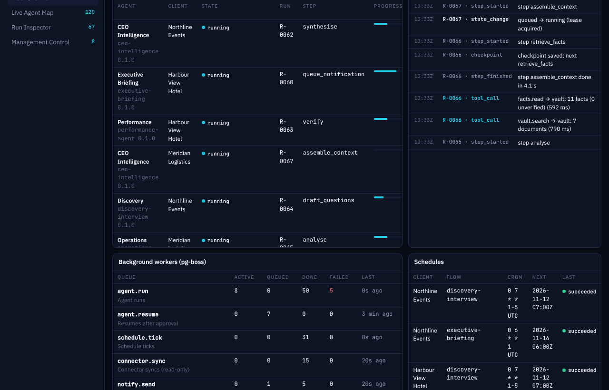
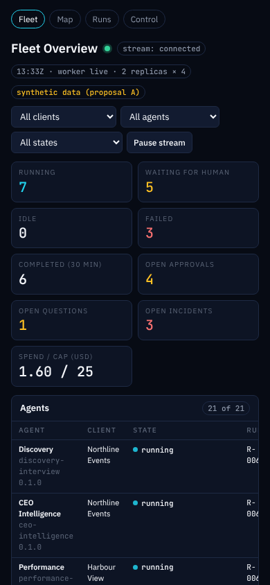
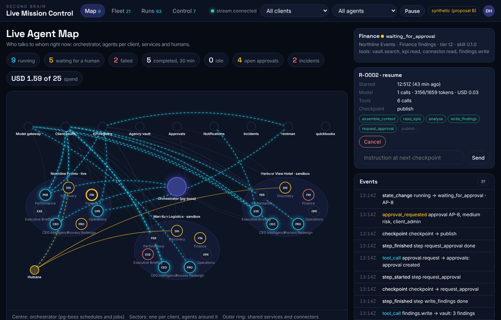
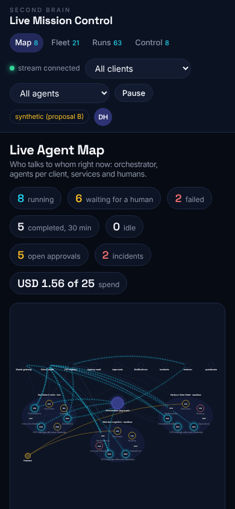
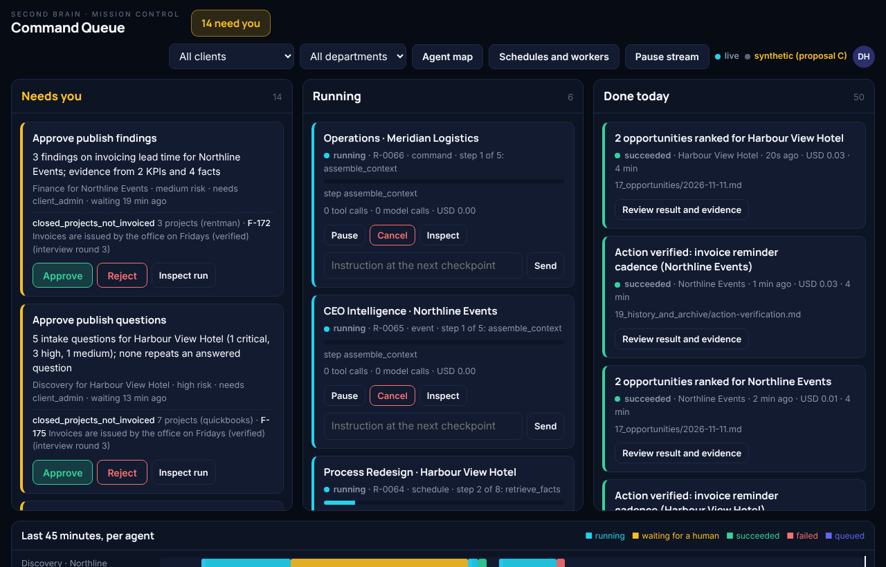
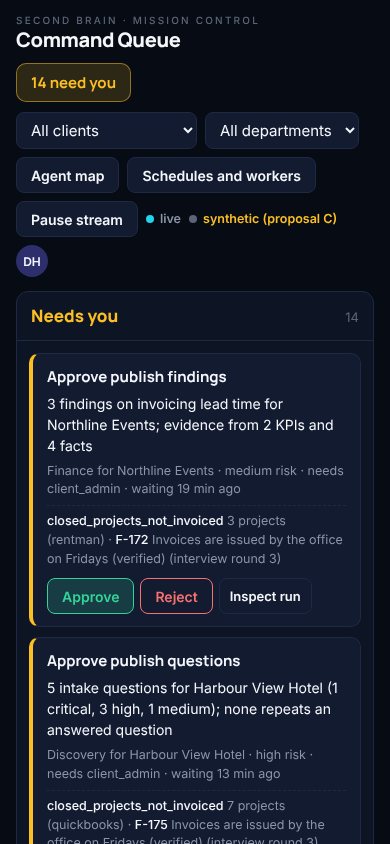

Each proposal is an interactive prototype on the same synthetic fleet: 3 synthetic clients, 21 agent instances, at least six runs active at once, with scripted failures, approvals, questions and completions. The vocabulary is the real schema (run_state, run_event_kind, approval_state, incident_kind, pg-boss queues). Open a proposal, let it run, approve or pause something. Nothing here touches the running system.






| A · Operations Deck | B · Flight Map | C · Command Queue | |
|---|---|---|---|
| Primary user | Agency operator on duty | Superadmin; demos to prospects | Operators and reviewers who decide |
| Information hierarchy | Counters, then the fleet table, then events | Map first, drawer for detail | What needs you first, then running, then done |
| Navigation | Existing sidebar plus four live entries | Top bar with four tabs | No navigation: lanes plus two overlays |
| Density | High | Medium | Low to medium |
| Typographic voice | Technical: Plex Sans, mono data | Display: Space Grotesk headings | Calm: Manrope, larger sizes |
| Colour strategy | Cyan for live, indigo for selection, semantic states | Indigo structure, cyan glow for activity | Near-monochrome with amber for attention |
| Strength | Most data per screen, smallest build | Best story: delegation and communication visible | Fastest decisions, best on a phone |
| Risk | Looks like today; weak demo effect | Largest build; graph layout needs care at 50+ agents | Power users miss the table; map hidden |
| Build size (estimate) | Small: 2 to 3 slices | Large: 4 to 5 slices | Medium: 3 to 4 slices |
| Reuse from research | mission-control widget layout, SSE hook | conductor React Flow graph, gate and guidance UI, SSE hook | paperclip approval card and instruction model, SSE hook |
docs/research/live-mission-control.md.